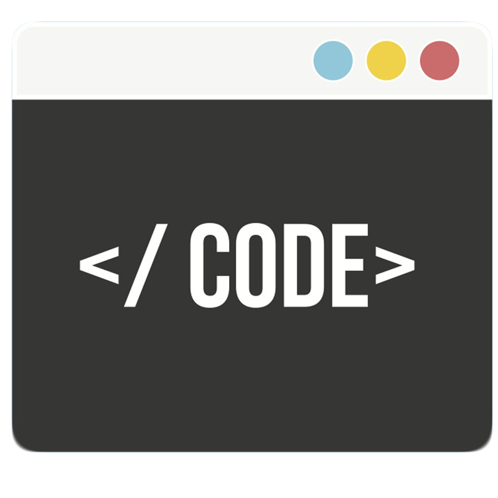

Work
I am currently on my Placement Year with Yell, where I am focusing on developing Yell Articles.
Will be releasing soon...

Current Projects
Alongside working at Yell. I am also freelancing. Checkout some of my recent work here.

Coding
Some of the languages and tools I am experienced in:
- HTML, CSS, JavaScript/JQuery, SASS, Jade
- Java (OOP), Python, C, PHP
- WordPress, MySQL, PostgreSQL
- GIT, SVN, Trello
Free Time
In my free time I usually focus on my two main hobbies which consists of:
- Photography/Videography
- Magic (Member of The Magic Circle) :D